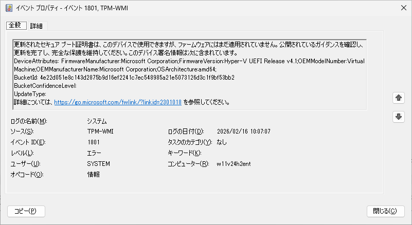
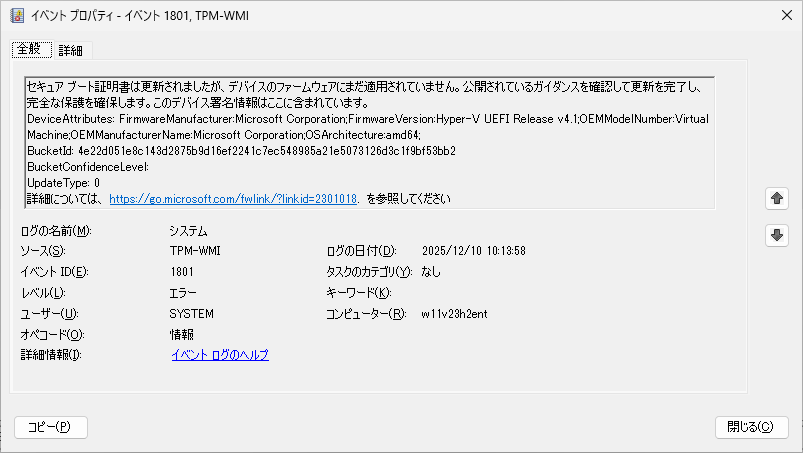
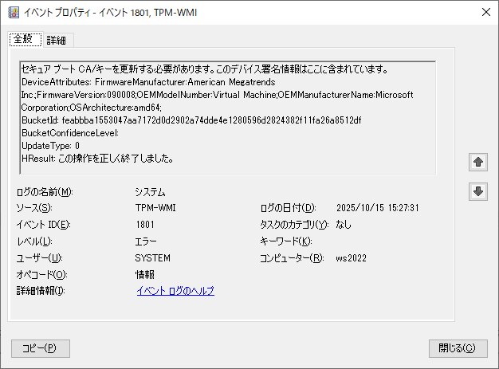

本記事はマイクロソフト社員によって公開されております。
こんにちは、Windows サポートの丸山です。
本記事では、2025 年 10 月以降のセキュリティ更新プログラム適用後に記録される TPM-WMI ID: 1801 のイベントについてご案内いたします。
■ 概要
2025 年 10 月のセキュリティ更新プログラム適用後、一部の Windows デバイスにおいて、起動時に TPM-WMI ID: 1801 のイベントが記録される事象が報告されています。本イベントは、Secure Boot 証明書の更新について、今後のセキュリティ更新を正常に受け取るために必要な対応を促すイベントであり、想定された動作です。
■ 事象
以下の環境において、OS 起動時に次のイベントが記録される事象が報告されています。
対象 OS
- Windows 10 version 22H2
- Windows 11 version 22H2, 23H2, 24H2, 25H2
- Windows 10 Enterprise LTSC 2021
- Windows 11 Enterprise LTSC 2024
- Windows Server 2022
- Windows Server 2025
また 2025 年 11 月のセキュリティ更新プログラム適用後には以下の OS バージョンにおいてもイベントが記録されます。
- Windows 10 Enterprise 2016 LTSB
- Windows 10 Enterprise LTSC 2019
- Windows Server 2016
- Windows Server 2019
イベントの例
※ 2026-02-18 追記 : 2026 年 1 月度のセキュリティ更新プログラムに相当する更新が適用されているかどうかにより、メッセージが変わりますのでご注意ください。
※ 2025-12-18 追記 : 2025 年 11 月度のプレビュー更新プログラムに相当する更新が適用されているかどうかにより、メッセージが変わりますのでご注意ください。
2026 年 1 月のセキュリティ更新プログラム以降のメッセージ
ログの名前: System
ソース: Microsoft-Windows-TPM-WMI
イベント ID: 1801
レベル: エラー
説明: 更新されたセキュア ブート証明書は、このデバイスで使用できますが、ファームウェアにはまだ適用されていません。公開されているガイダンスを確認し、更新を完了し、完全な保護を維持してください。このデバイス署名情報は次に含まれています。

2025 年 11 月のプレビュー更新プログラム以降、2026 年 1 月のセキュリティ更新プログラム以前のメッセージ
ログの名前: System
ソース: Microsoft-Windows-TPM-WMI
イベント ID: 1801
レベル: エラー
説明: セキュア ブート証明書は更新されましたが、デバイスのファームウェアにまだ適用されていません。公開されているガイダンスを確認して更新を完了し、完全な保護を確保します。このデバイス署名情報はここに含まれています。

2025 年 11 月のプレビュー更新プログラム以前のメッセージ
ログの名前: System
ソース: Microsoft-Windows-TPM-WMI
イベント ID: 1801
レベル: エラー
説明: セキュア ブート CA/キーを更新する必要があります。このデバイス署名情報はここに含まれています。

■ 対処策について
本イベントは Secure Boot 証明書の更新が未完了であることを通知する目的で記録されております。
本イベントへの対応方法について、ご案内させていただきます。
1. 手動で Secure Boot 証明書の更新を適用する
以下のレジストリ値を設定することで、管理者は Secure Boot 証明書の手動更新を開始できます。
キー : HKEY_LOCAL_MACHINE\SYSTEM\CurrentControlSet\Control\SecureBoot
名前 : AvailableUpdates
種類 : REG_DWORD
値 : 0x5944
⚠️ 注意: Secure Boot の更新は、Windows OS だけではなく、デバイスの UEFI ファームウェア上にある証明書データベースの更新を行う必要がございます。この影響により、一部の環境では更新後、OS が起動しなくなる事象が報告されております。手動更新を実施いただく場合には、可能な限り事前に検証環境をご用意いただき、動作のご確認をお願いいたします。
2. Microsoft による自動更新の適用を待つ
前述の手順にて Secure Boot 証明書の手動更新を行わない場合におきましても、Secure Boot 証明書の更新処理が安全に適用でき、”高信頼” であることが確認できたデバイスにおきましては、今後適切なタイミングで自動的な更新処理が開始される見込みでございます。
しかしながら、お使いのデバイスによりましては十分な信頼性が確認できず、手動での更新が必要となる可能性がございますので、ご注意ください。
3. デバイスの提供元にご相談いただく
AvailableUpdates 値を設定し、手動更新を開始しましても、引き続き TPM-WMI ID: 1801 イベントが記録され続ける場合には、事前にファームウェア アップデートなどの対応が必要になることがございますので、デバイスの提供元様にご相談いただくことをご検討ください。
■ 関連情報
Windows セキュア ブート証明書の有効期限と CA 更新プログラム
https://support.microsoft.com/ja-jp/topic/7ff40d33-95dc-4c3c-8725-a9b95457578e
KB5036210: セキュア ブート許可署名データベース (DB) への Windows UEFI CA 2023 証明書の展開 - Microsoft サポート
https://support.microsoft.com/ja-jp/topic/a68a3eae-292b-4224-9490-299e303b450b
Updating Microsoft Secure Boot keys | Windows IT Pro blog
https://techcommunity.microsoft.com/blog/windows-itpro-blog/updating-microsoft-secure-boot-keys/4055324
■ 更新履歴
- 2025-10-28 本記事を新規公開しました。
- 2025-11-17 対象 OS を追加しました。
- 2025-11-18 対処策の記載内容を更新しました。
- 2025-12-18 2025 年 11 月度のプレビュー更新プログラム適用後のメッセージの改善について追記しました。
- 2026-02-18 2026 年 1 月度のセキュリティ更新プログラム適用後のメッセージの改善について追記しました。